전체 55건
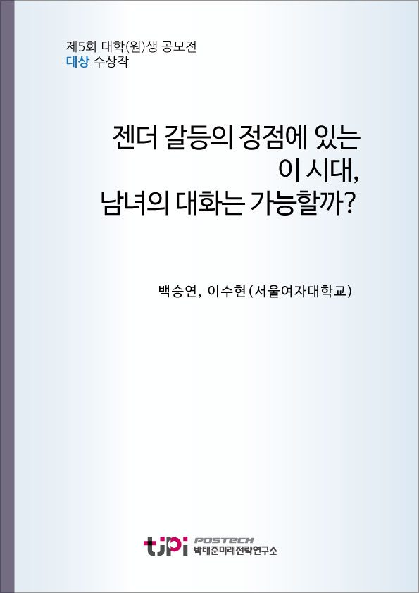
[2018 청년 에세이 대상] 젠더 갈등의 정점에 있는 이 시대, 남녀의 대화는 가능할까?
백승연, 이수현(서울여자대학교) · 2018-12-12
늘 궁금했다. 이 시대의 남성과 여성, 여성과 남성이 커뮤니케이션할 수 있을까? 그리고 남성들은 왜 이토록 페미니즘에 거부감을 가지게 됐나. 그렇�..
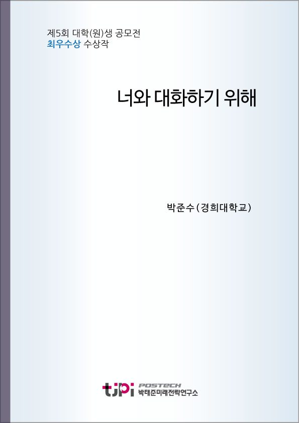
[2018 청년 에세이 대상] 젠더 갈등의 정점에 있는 이 시대, 남녀의 대화는 가능할까?
박준수(경희대) · 2018-12-12
나는 현재 지역아동센터에서복무하고 있다. 내 역할은 업무 중 형편이 어려운 아이들의 공부를 지도하고, 그 외 교육관련 상담을 하는 것이다. 근처 �..
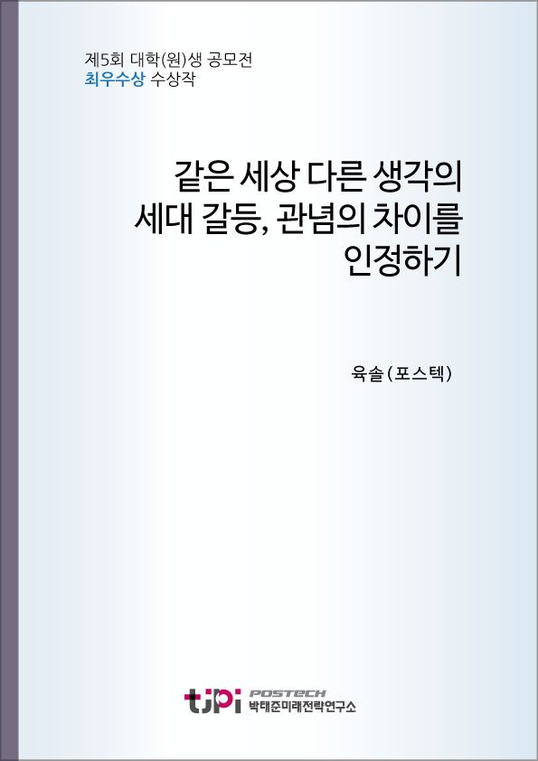
[2018 청년 에세이 최우수상]같은 세상 다른 생각의 세대 갈등, 관념의 차이를 인정하기
육솔(포항공과대학교) · 2018.12.12
신조어는 그 시대의 사회와문화가 반영되어 생성된다는 점에서, 문제 인식의 실마리가 될 수 있다.최근 신조어 중 ‘할많하않’이라는 단어가 있다. �..
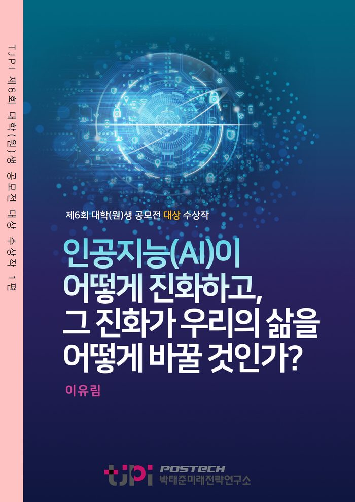
[2019 청년 에세이 대상]인공지능이 바꿀 미래? 인간이 바꿀 미래!
이유림(경희대) · 2019-11-30
인공지능이 두려운 이유는 인공지능에 의해 야기될 사회 혼란 때문이다. 일자리 변화, 노동 시장에서 소외된 '무용계층' 쓸모없는 계층의 발생, 빈익�..
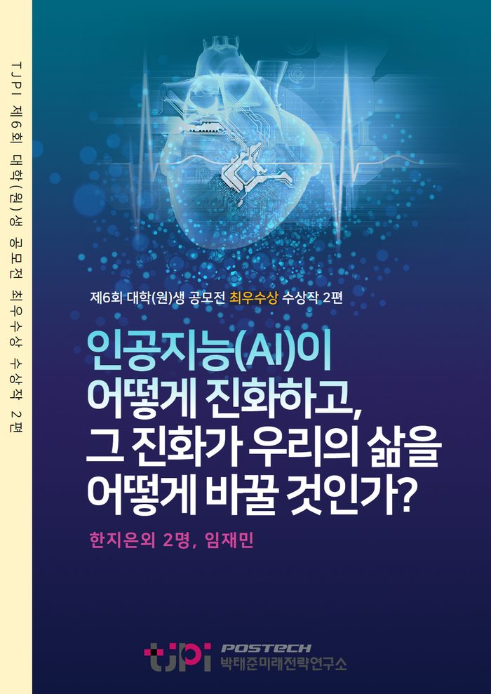
[2019 청년 에세이 최우수상 2편]인공지능이 바꿔 놓을 미래의 모습
한지은외 2명, 임재민 · 2019-11-30
人共지능으로 나아가기 위한 미래 기계번역 사용 설명서 - 한지은, 박소연, 이충헌바벨탑 전설에 따라 언어가 혼란하게 된 이래로 사람들은 소통을 위�..
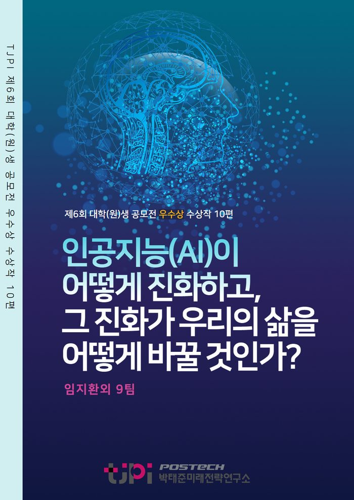
[2019 청년 에세이 우수상 10편]인공지능이 바꿔 놓을 미래의 모습
임지환외 9팀 · 2020-1-30
4차 산업혁명시대의 도래, 인공지능(AI)이 어떻게 진화하고, 그 진화가 우리의 삶을 어떻게 바꿀 것인가에 대해 청년들의 생각을 묻는 공모전을 개최하..
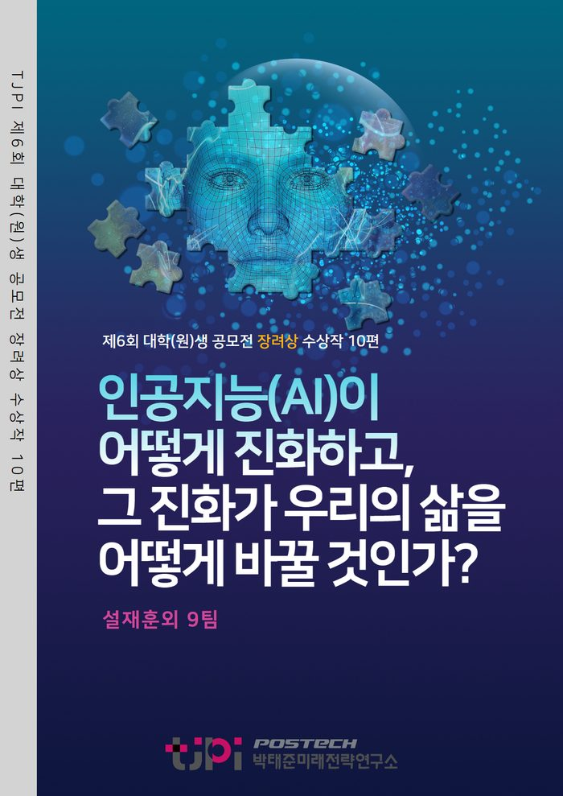
[2019 청년 에세이 장려상 10편]인공지능이 바꿔 놓을 미래의 모습
설재훈외 9팀 · 2020-01-30
4차 산업혁명시대의 도래, 인공지능(AI)이 어떻게 진화하고, 그 진화가 우리의 삶을 어떻게 바꿀 것인가에 대해 청년들의 생각을 묻는 공모전을 개최하..
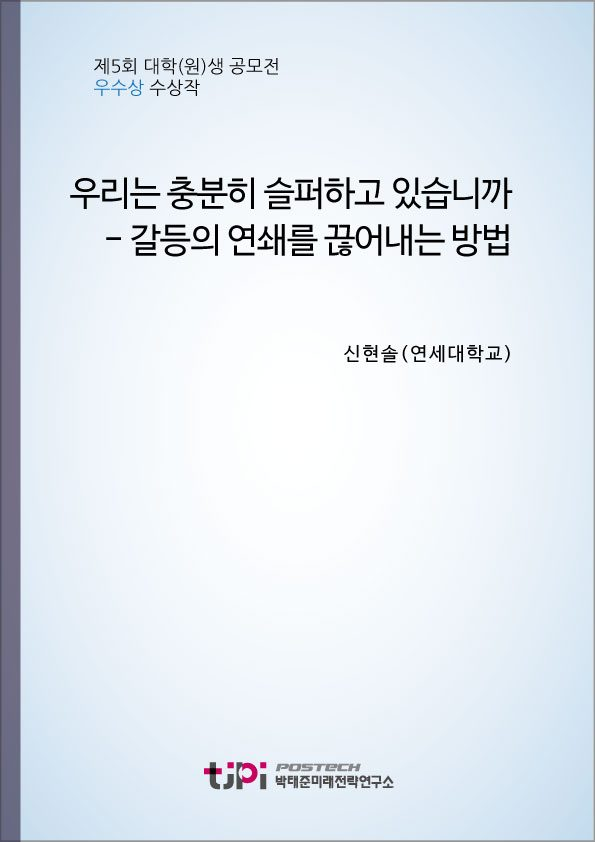
[2018 청년 에세이 우수상 01]우리는 충분히 슬퍼하고 있습니까
신현솔(연세대) · 2018-12-30
개인에게 종속된 고통과 슬픔은 끝없는 분노와 고통의 연쇄를 만들어낸다. 연쇄작용 속에서 갈등은 점점 더 심화된다. 단순히 보상을 받거나, 처벌하�..
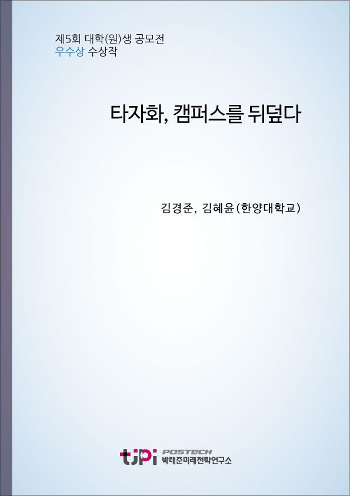
[2018 청년 에세이 우수상 02]타자화, 캠퍼스를 뒤덮다
김경준, 김혜윤(한양대) · 2018-12-01
기존의 세대 갈등은 기성세대와 신세대 간의 가치관과 의식적 차이에 기반을 둔다고 생각한다. 하지만 대학 내 세대 갈등은 기존의 세대 갈등과는 그 �..

[2018 청년 에세이 우수상 03] 가치 갈등 해소를 위한 쉬운 답과 어려운 실천
배희진(단국대) · 2018-11-01
가끔 방송을 통해 사나운 강아지를 유순하게 만드는 프로그램을 본다. 주인의 강아지에 대한 이해의 부족, 강아지의 행동과 반응에 대한 적절하지 못�..
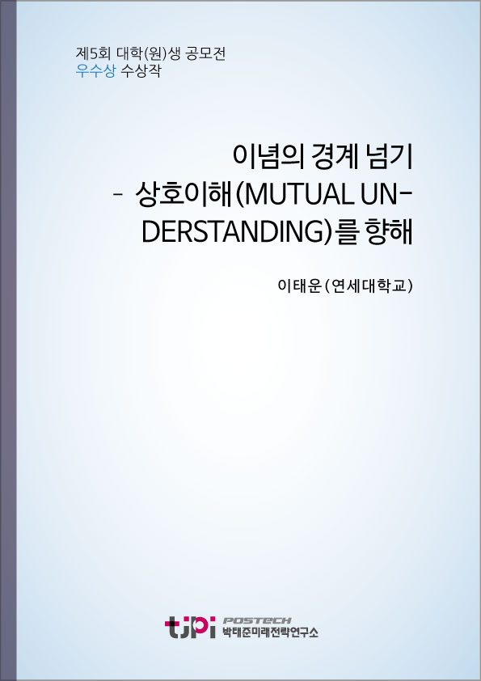
[2018 청년 에세이 우수상 04]이념의 경계 넘기 – 상호이해(mutual understanding)를 향해
이태운(연세대) · 2018-10-01
“인간의 역사는 계급투쟁의 역사이다.” 카를 마르크스의 유명한 경구다. 그는 경제구조가 정치, 문화, 역사 등 사회의 모든 것을 결정한다고 믿었다..
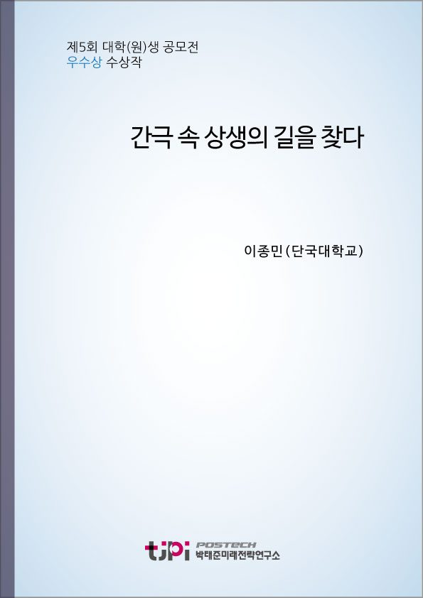
[2018 청년 에세이 우수상 04]이념의 경계 넘기 – 상호이해(mutual understanding)를 향해
이종민(단국대) · 2018-09-01
“조선은 노인의 천국이다.”“나는 노년을 위해 조선 땅에서 다시 태어나고 싶다.”“세계에서 관습적인 노인 복지가 가장 잘 되어 있는 나라는 바로..
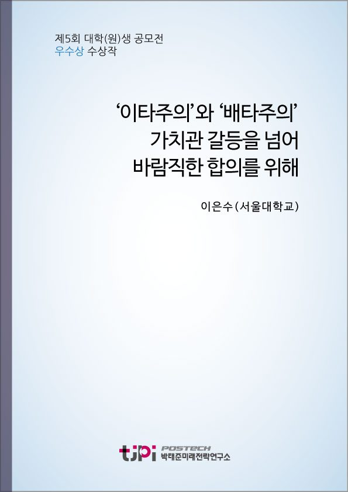
[2018 청년 에세이 우수상 07] 우리는 패자가 없는도시에 살고 싶다-공유도시에서 찾는 임대차 갈등 해결 방안
이은수(서울대학교) · 2019.08.27
‘이타주의’와 ‘배타주의’ 가치관 갈등을 넘어 바람직한 합의를 위해 : 예멘 난민 수용 이슈를 중심으로현재 한국 사회의 최대 이슈로 떠오른 난민..
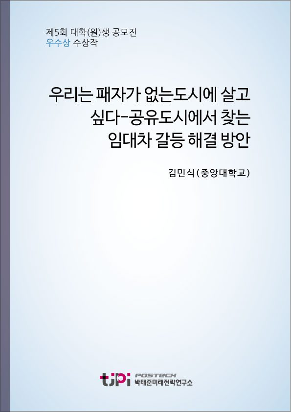
[2018 청년 에세이 우수상 07] 우리는 패자가 없는도시에 살고 싶다-공유도시에서 찾는 임대차 갈등 해결 방안
김민식(중앙대학교) · 2019.7.16
우리는 패자가 없는도시에 살고 싶다-공유도시에서 찾는 임대차 갈등 해결 방안“법은 내(건물주) 편이며, 족발값은 족발집 주인이 정하고 임대료는 �..
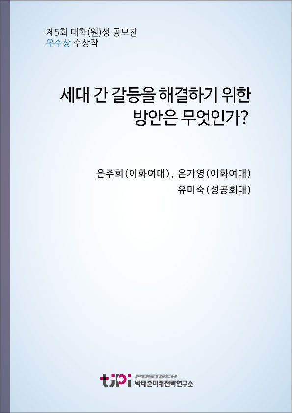
[2018 청년 에세이 우수상 08] 세대 간 갈등을 해결하기 위한 방안은 무엇인가?- 가족 내 세대 간 공감을 이끄는 대화법 확산을 중심으로
은주희(이화여대), 온가영(이화여대), 유미숙(성공회대) · 2019.3.27
세대 간 갈등 요인에 대한 인식 조사 결과를 살펴보면, 연령대별로 다르게 나타나고 있다세대 간 갈등을 느끼는 당사자들은 거시적인 문제보다 소통의..
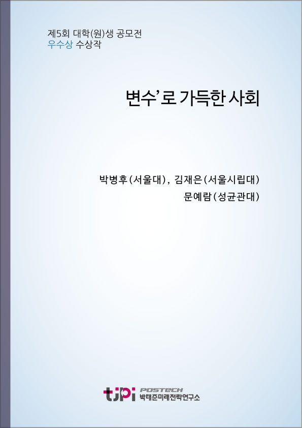
[2018 청년 에세이 우수상 09] ‘변수’로 가득한 사회
박병후(서울대), 김재은(서울시립대), 문예람(성균관대) · 2018.11.12
우리는 우리가 속해있는 이 사회가 얼마나 ‘변수’라는 것을 싫어하며, 또 기존의 계층을 유지하기 위해 얼마나 많은 노력을 하고 있는지를 발견할 �..

[2018 청년 에세이 우수상 10] 성(姓) 성(姓) 갈등 , 꾸짖고 (喝:꾸짖을 꾸짖을 갈) 등(燈:등 등)불을 제시하다.
황호연, 이준영, 김찬영 · 2018.10.10
성(姓) 갈등 , 꾸짖고 (喝:꾸짖을 꾸짖을 갈) 등(燈:등 등)불을 제시하다.이러한 젠더 갈등을 해소하고 소모적인 논쟁을 해결하는 데 어떠한 해결책들이..

[2018 청년 에세이 우수상 10] 성(姓) 성(姓) 갈등 , 꾸짖고 (喝:꾸짖을 꾸짖을 갈) 등(燈:등 등)불을 제시하다.
고민정외 14명(10팀) · 2018-9-19
올해로 5회 째인 박태준미래전략연구소 대학생 및 대학원생 공모전이 ‘한국 사회의 갈등을 해소하기 위한 방안’이라는 주제로 열렸다. 세대 갈등, �..

[2017 청년 에세이 최우수상] 듣기 좋은 말은 귀머거리도 듣게 만든다
노현태(한양대학교), 유용재(서울대학교) · 2017.08.01
[에세이 대상 수상작] 2017년의 한국 사회에서 보여준 정치적 시민의식의 커다란 성숙에 뒤를 이어, 2020년을 바라보는 한국 사회에서 시민사회의 언어�..

[2017 청년 에세이 최우수상] 현대 한국사회의 ‘개별 집단’과 ‘전체 사회’의 균형추로서의 ‘시민’에 대하여
배형준 (연세대학교) · 2017.08.01
[에세이 우수상 최수상작] 우리가 가진 '성숙함의 씨앗'은 결코 부족하지 않다. 다만 그것을 공론화시키고 확대 재생산하여 사회 저변에 공감대를 형�..

[2017 청년 에세이 최우수상] 현대 한국사회의 ‘개별 집단’과 ‘전체 사회’의 균형추로서의 ‘시민’에 대하여
송은호 (서울대학교) · 2017.08.01
[에세이 최우수상 수상작] 이 글은 물리학적 사유로 사회의 다양성, 시민의 주체성을 살펴본 이후, 현대한국사회는 ‘개별 집단’이 ‘전체 사회’ 사�..

[2017 청년 에세이 최우수상] 현대 한국사회의 ‘개별 집단’과 ‘전체 사회’의 균형추로서의 ‘시민’에 대하여
구서영 (가톨릭대학교) · 2017.08.01
[에세이 우수상 수상작] 1장은 남녀의 대립으로 살펴본 우리나라 시민의식의 현주소로 필자가 고등학교 3년 간 겪어온 성적인 언어폭력과 여성주의 학�..
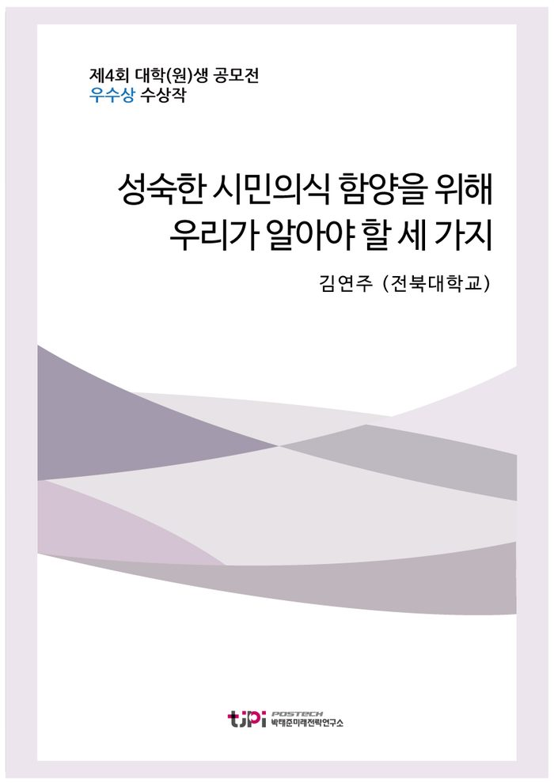
[2017 청년 에세이 우수상] 성숙한 시민의식 함양을 위해 우리가 알아야 할 세 가지
김연주 (전북대학교) · 2017.08.01
[에세이 우수상 수상작] 성숙한 시민의식이란 더 나은 사회를 위해 본인의 의견을 말하고 책임있는 행동을 보이는 것입니다. 이를 저해하는 요인을 ..
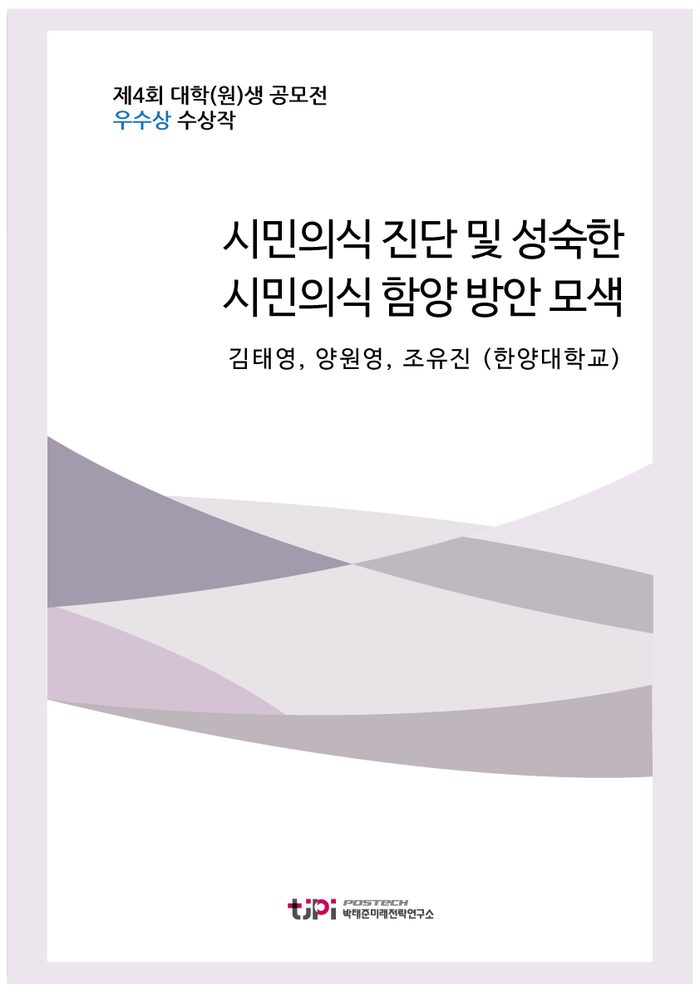
[2017 청년 에세이 우수상] 역사와 시민의식: 개인주의의 시대에 “성숙한 시민의식”은 어떻게 가능한가?
김태영, 양원영, 조유진 (한양대학교) · 2017.08.01
[에세이 우수상 수상작] 사람들은 성숙한 시민의식이 무엇인지, 그리고 그것을 함양하려면 어떻게 행동해야 하는지를 교육을 통해 분명히 배웠다. 그�..
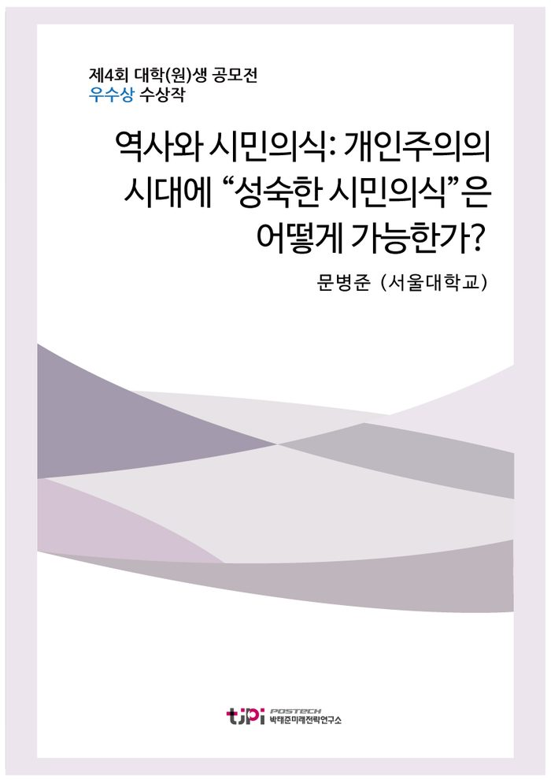
[2017 청년 에세이 우수상] 역사와 시민의식: 개인주의의 시대에 “성숙한 시민의식”은 어떻게 가능한가?
문병준 (서울대학교) · 2017.08.01
[에세이 우수상 수상작] “성숙한 시민이식”이란 현대의 도덕이다. 그러나 개인주의적 이익추구를 근간으로 하는 현대 사회에서 이런 도덕적인 가치..
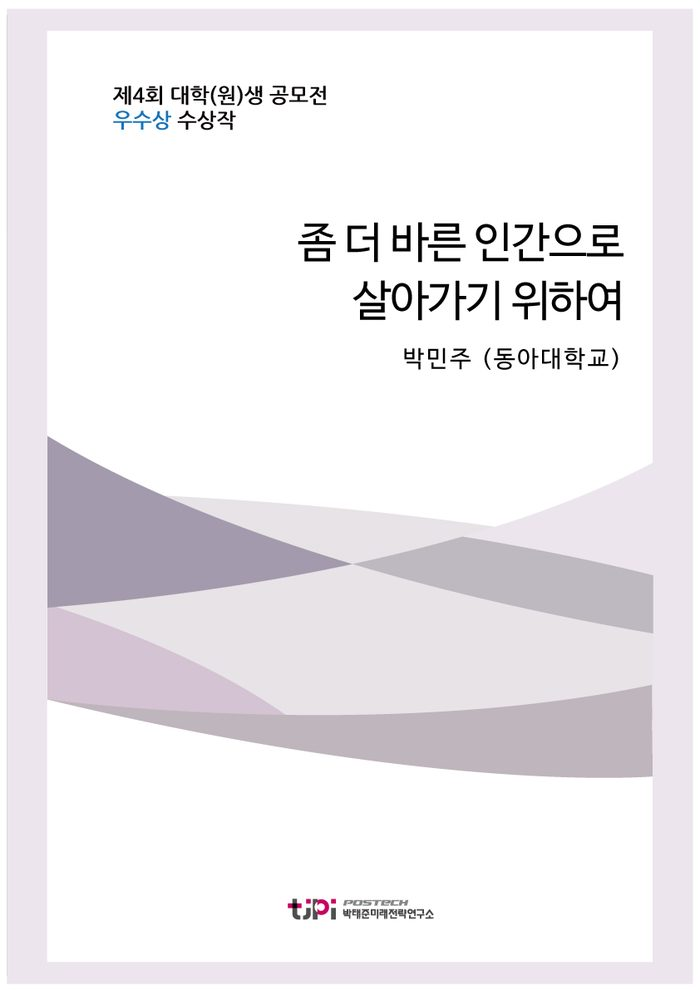
[2017 청년 에세이 우수상] 역사와 시민의식: 개인주의의 시대에 “성숙한 시민의식”은 어떻게 가능한가?
박민주 (동아대학교) · 2017.08.01
[에세이 우수상 수상작] 가정 및 초, 중, 고교에서의 시민의식 함양을 위한 방안 제시1. 가정에서의 실천방안(집안일 참여 및 구체적 예시)공교육에서의..
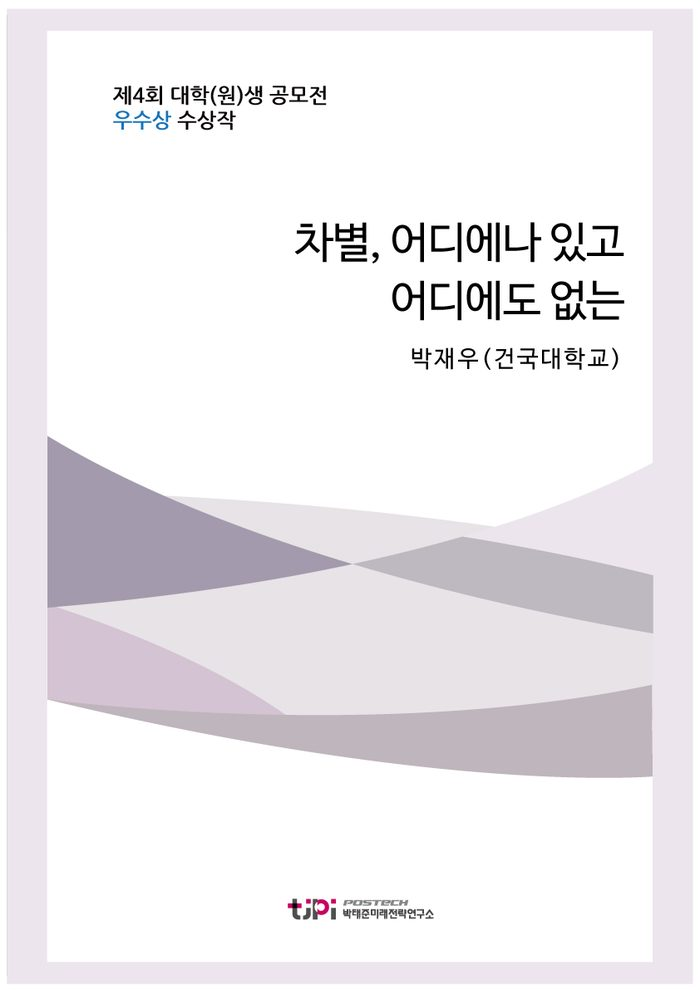
[2017 청년 에세이 우수상] 차별, 어디에나 있고 어디에도 없는
박재우(건국대학교) · 2017.08.01
[에세이 우수상 수상작] 직접 겪고 분석한 경험을 바탕으로 현대 사회에서 차별이 생길 수밖에 없는 원인과 그 과정을 분석하고 새로운 차별(역차별)�..
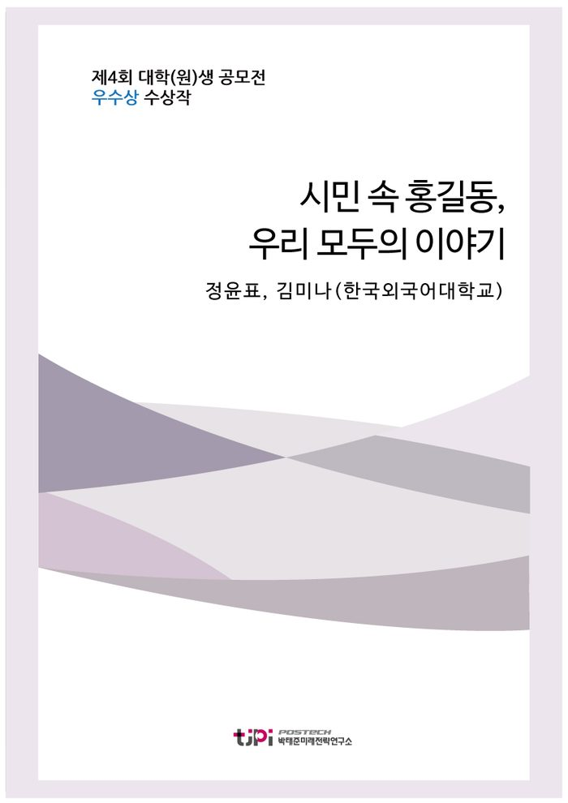
[2017 청년 에세이 우수상] 시민 속 홍길동, 우리 모두의 이야기
정윤표, 김미나(한국외국어대학교) · 2017.08.01
[에세이 우수상 수상작] 한국 시민들이 공공재를 이용하는 모습을 통해 시민의식 수준을 진단하고 그 요인을 분석했다. 또한 공공재를 경제적 측면에�..
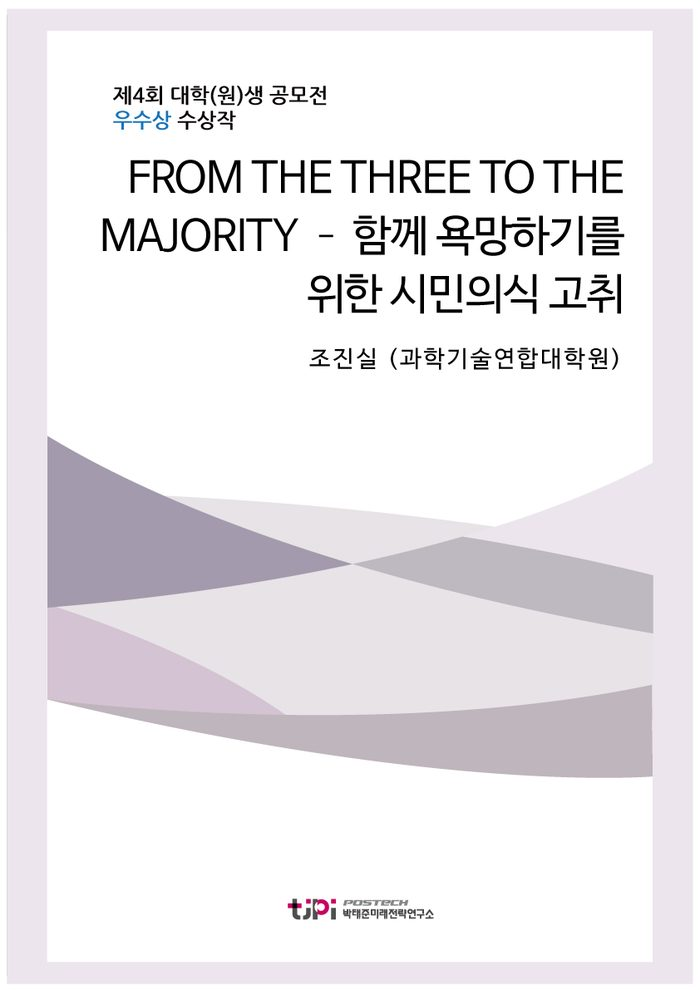
[2017 청년 에세이 우수상] From the three to the majority – 함께 욕망하기를 위한 시민의식 고취
조진실 (과학기술연합대학원) · 2017.08.01
[에세이 우수상 수상작] 무엇인가를 할 때 3명의 인원이면 주변의 반응을 이끌어 내기 위한 충분 조건이 되므로 다수가 될 수 있는 힘을 가졌기 때문에 ..
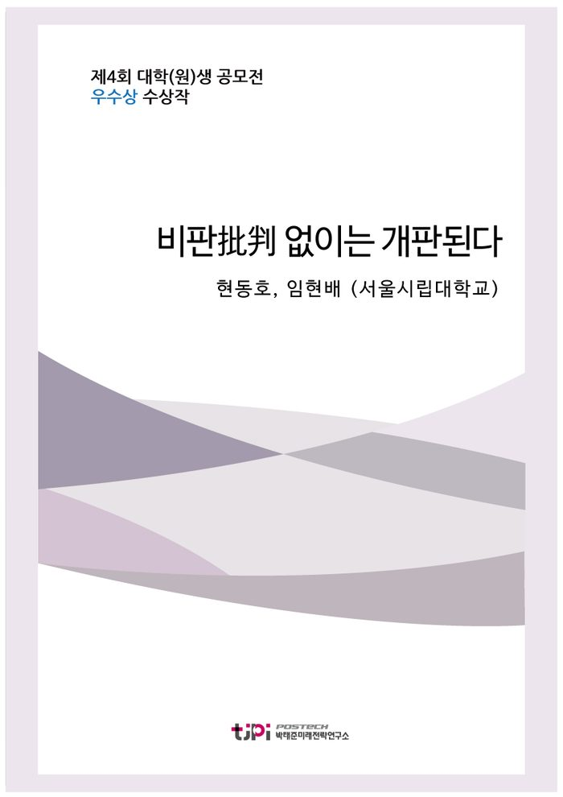
[2017 청년 에세이 우수상] From the three to the majority – 함께 욕망하기를 위한 시민의식 고취
현동호, 임현배 (서울시립대학교) · 2017.08.01
[에세이 우수상 수상작] 시민의식이 우리 사회에 만들어내는 부정적인 모습들은 다양하다. 이처럼 현재 대한민국의 시민의식이 저급한 형태를 띠게 되..
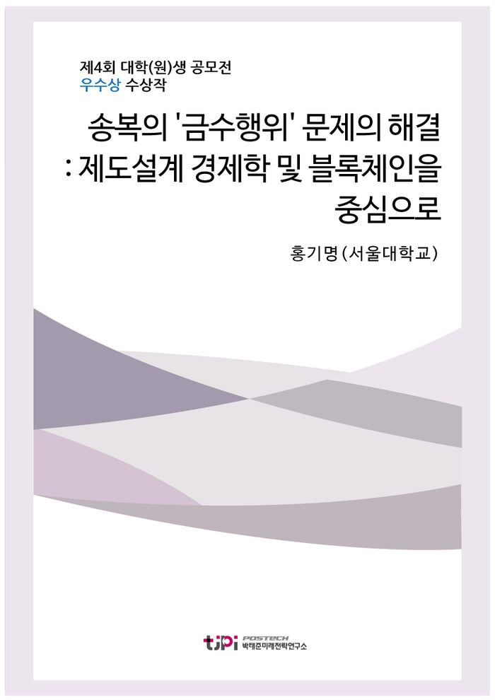
[2017 청년 에세이 우수상] 송복의 '금수행위' 문제의 해결: 제도설계 경제학 및 블록체인을 중심으로
홍기명(서울대학교) · 2017.08.01
[에세이 우수상 수상작] 송복(2016)의 ‘한국인의 의식전환‘ 중 ’금수행위‘를 중심으로 제도설계 경제학 및 블록체인 기술을 동원해 경제학적, 공학..

[2017 청년 에세이 우수상] 송복의 '금수행위' 문제의 해결: 제도설계 경제학 및 블록체인을 중심으로
김동영, 이성진외 9팀 · 2017.08.01
2017년 우리나라 국민들의 시민의식은 어디까지 왔을까. 그지난 3개월에 걸쳐 박태준미래전략연구소는 전국 대학생 및 대학원생들을 대상으로 지금보�..

[2016 청년 에세이 대상] ‘너 살고 나 살자'
곽민준 (포스텍 생명과학과) · 2016.07.20
[에세이 대상 수상작] 도대체 왜 한국인들은 다른 사람들과의 관계에서 부정적인 감정을 느끼게 되는 것일까? 그 이유는 한국사회를 가장 잘 나타내는..
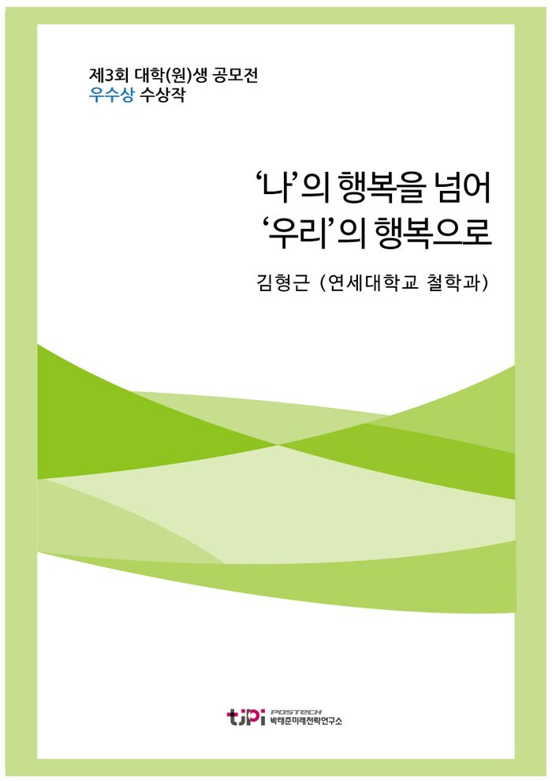
[2016 청년 에세이 우수상] ‘나’의 행복을 넘어 ‘우리’의 행복으로
김형근 (연세대학교 철학과) · 2016.07.20
본 에세이는 행복에 대한 본질적인 성찰에서 시작하여 자기 자신으로, 나아가 ‘우리’로 살아가는 한 나의 참된 행복과 행복한 사회가 동시에 가능할..
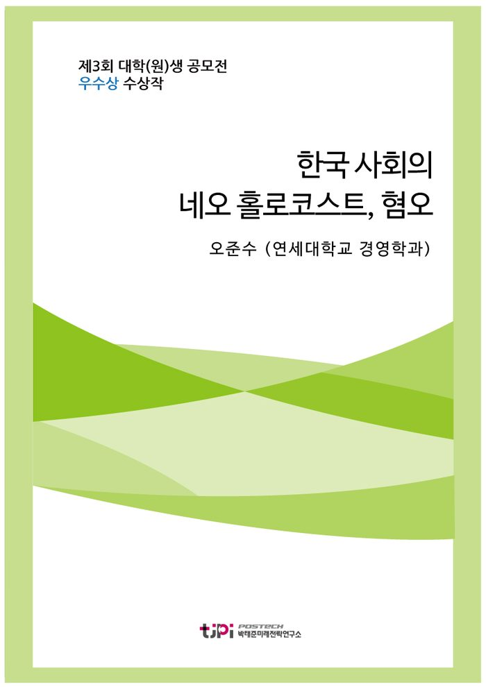
[2016 청년 에세이 우수상] '한국 사회의 네오 홀로코스트, 혐오'
오준수 (연세대학교 경영학과) · 2016.07.20
본 에세이는 최근 수없이 많은 혐오의 문제들을 겪고 있는 한국사회의 혐오의 원인과 해결방안을 제시하고 있다. 개인의 혐오 감정을 부정적인 루트를..
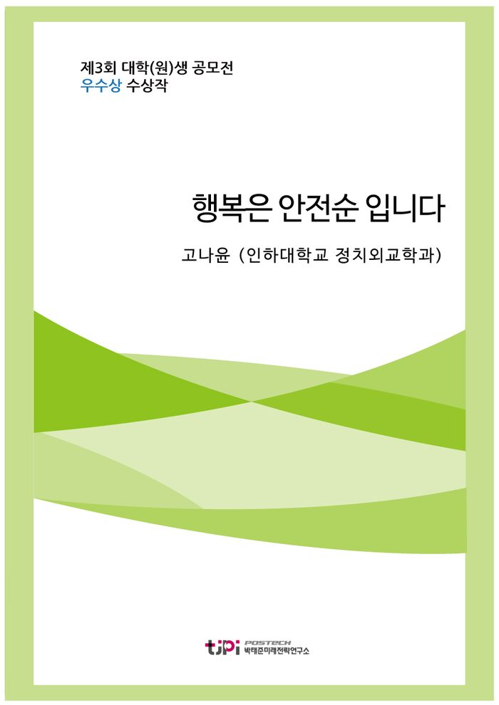
[2016 청년 에세이 우수상] '한국 사회의 네오 홀로코스트, 혐오'
고나윤 (인하대학교 정치외교학과) · 2016.07.20
행복의 가치는 자신의 삶에 대한 만족감을 기본으로 한다. 행복감은 또한 안전한 삶에 대한 평가를 통해 각 개인이 느끼는 만족감도 결합되어 있음을 �..

[2016 청년 에세이 우수상] '갈등사회? 경청의 시스템'
김우열, 신정근, 민수호 (연세대학교 신소재공학과) · 2016.07.20
현재 우리는 ‘노오력’의 덫에 빠져있다. 사회 구성원들이 행복하지 않은 이유는 행복을 느끼는 경험이 부족함에서 비롯된 것이다. 어릴 때부터 ‘노..

[2016 청년 에세이 우수상] '갈등사회? 경청의 시스템'
김종하 (중앙대학교 경제학부) · 2016.07.20
한국사회는 본질적으로 갈등이 감춰진 사회다. 마치 애인에게 할 말을 못하는 사람과도 같다. 사람들은 다들 싸울 줄 모른다. 한국사회의 사람들은 모�..
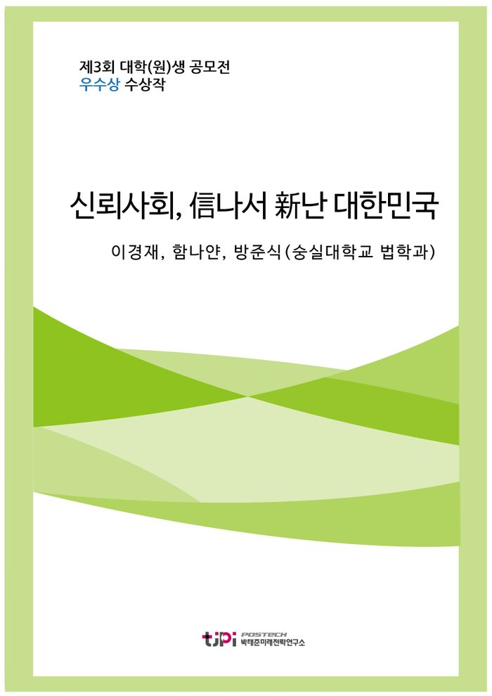
[2016 청년 에세이 우수상] '표류하는 한국사회, 북극성으로서의 인문학'
이경재, 함나얀, 방준식(숭실대학교 법학과) · 2016.07.20
본 에세이를는 우리사회에서 신뢰가 부족한 그 원인과 신뢰를 다시 두텁게 할 방법에 대해 논하고 있다.우리는 타인과의 관계 속에서 서로 의지하며 �..
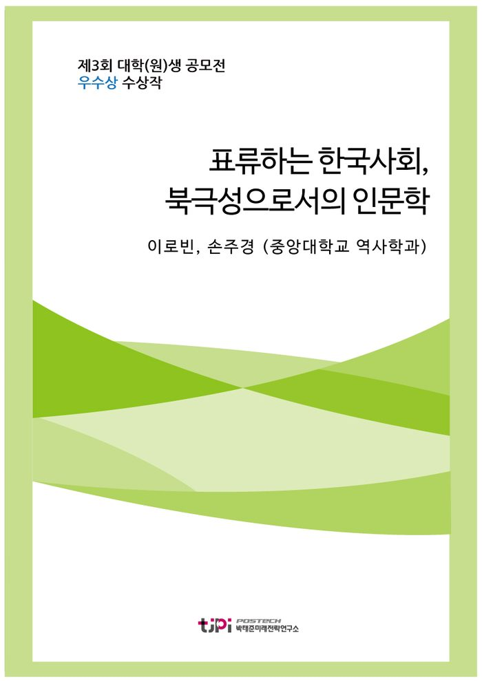
[2016 청년 에세이 우수상] '표류하는 한국사회, 북극성으로서의 인문학'
이로빈, 손주경 (중앙대학교 역사학과) · 2016.07.20
이 글은 한국사회가 위험사회로 가는 길목에 있음을 보여주는 4개의 갈등의 모습을 분석하고 갈등을 중재하고 하나의 한국인으로 나아가기 위해 한국..
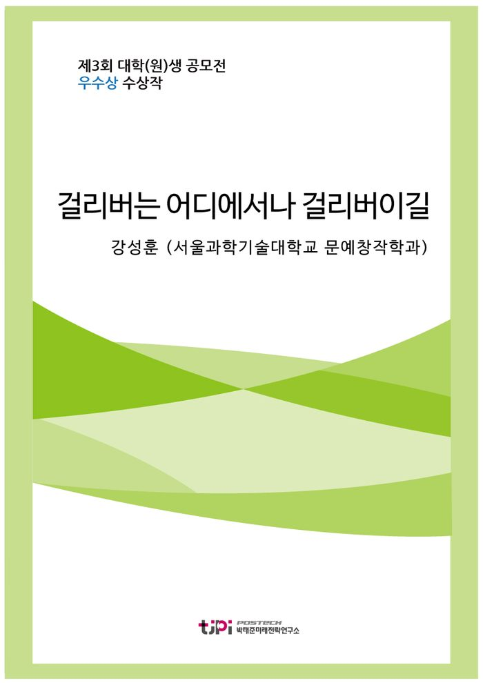
[2016 청년 에세이 우수상] '걸리버는 어디에서나 걸리버이길'
강성훈 (서울과학기술대학교 문예창작학과) · 2016.07.20
현 사회는 타인과 나의 다름을 정확히 이해하기 위해 노력한다기보다는 모른 체하고 지나가는 일이 다반사라해도 좋을 듯하다. 실상이 이렇다보니 사..
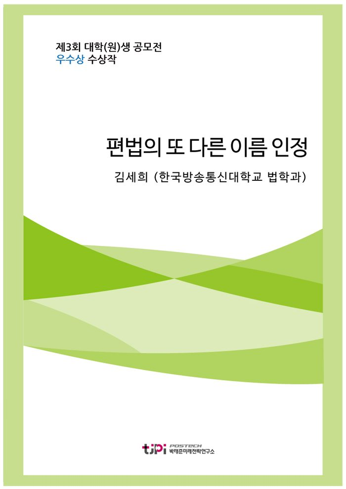
[2016 청년 에세이 우수상] '편법의 또 다른 이름 인정'
김세희 (한국방송통신대학교 법학과) · 2016.07.20
모든 것에 원리 원칙을 강요하는 것이 쉽지는 않지만 적어도 지키고자 하는 마음이 있다면, 나의 편법으로 불편을 겪는 사람이 줄어들 것이다. 나쁜 �..
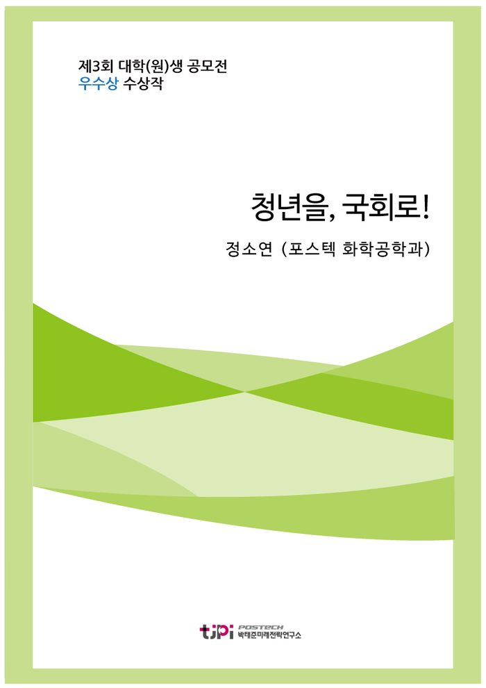
[2016 청년 에세이 우수상] 청년을, 국회로!
정소연 (포스텍 화학공학과) · 2016. 7. 20
[우수상 수상작] 청년을, 국회로!20대 총선에서 눈부신 활약을 한 청년들이지만, 청년을 위한 정책이 없다는 사실은 여전히 현 청년들은 정치와 매우 �..
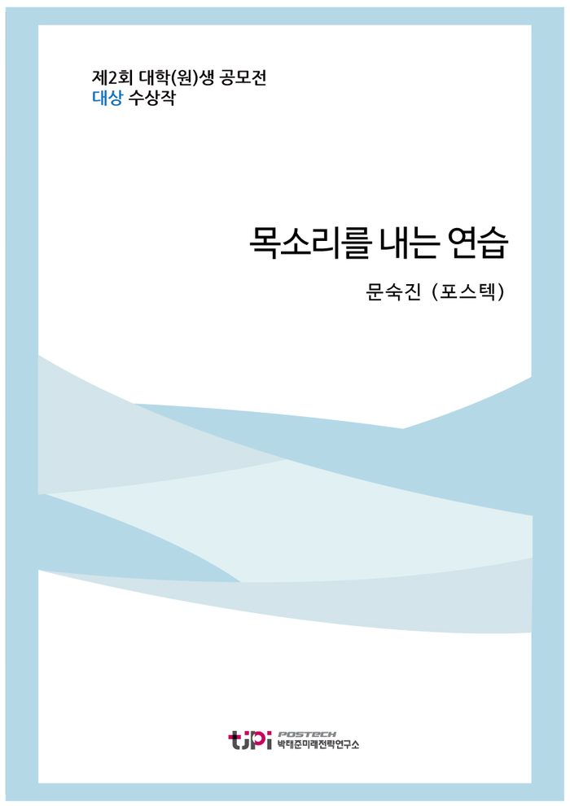
[2015 청년 에세이 대상] 전염병 예방 어디까지 준비했니?
문숙진 (포스텍) · 2015-09-01
2015 대학(원)생 에세이 공모전 대상' 목소리를 내는 연습 ' - 포스텍 문숙진대상작 「목소리를 내는 연습」은 개성적이면서도 주체적인 발상과 �..
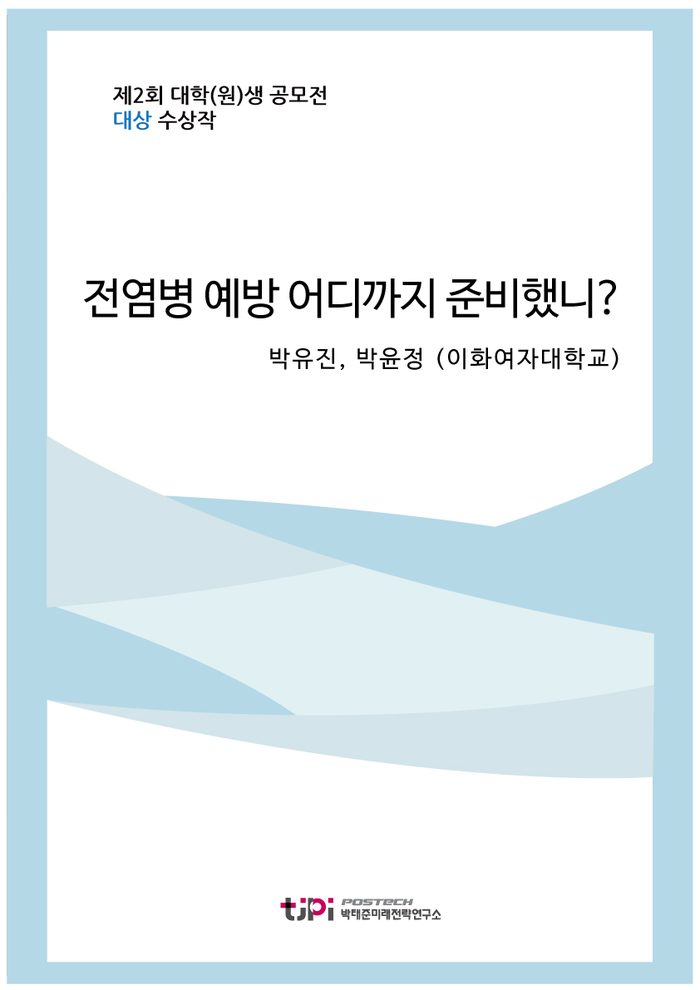
[2015 청년 에세이 대상] 전염병 예방 어디까지 준비했니?
박유진, 박윤정 (이화여자대학교) · 2015.09.01
2015 대학(원)생 에세이 공모전 대상' 전염병 예방 어디까지 준비했니? ' - 이화여자대학교 박유진, 박윤정대상작 「전염병 예방 어디까지 준비했�..

[2015 청년 에세이 우수작] 골든타임 10년, 방치하면 인재(人材)를 잃고 인재(人災)를 낳는다.
김동우(포스텍), 정재엽(서울시립대), 정금옥(영남대) · 2015-09-01
2015 대학(원)생 에세이 공모전 우수작' 골든타임 10년, 방치하면 인재(人材)를 잃고 인재(人災)를 낳는다. ' - 포스텍 김동우, 서울시립대학교 정재�..
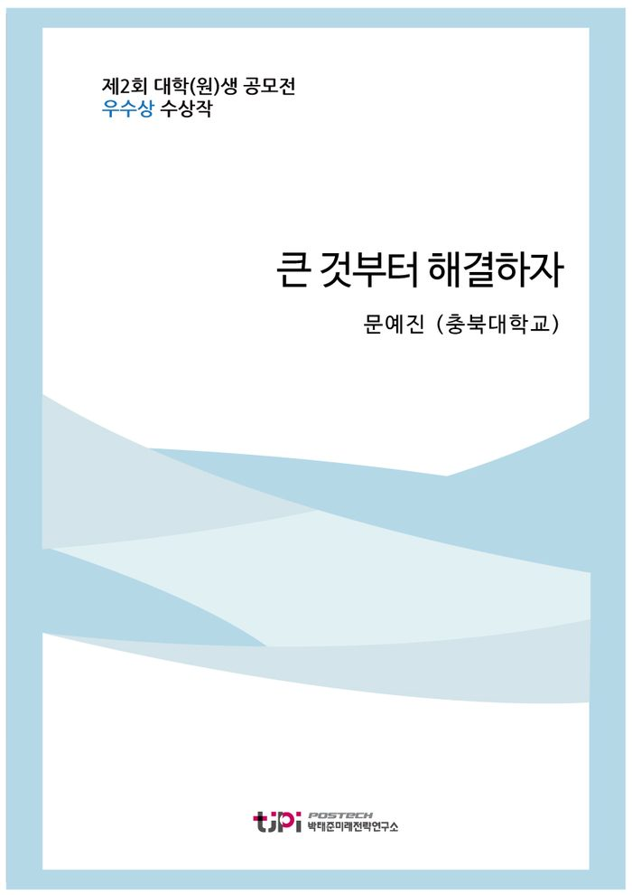
[2015 청년 에세이 우수작] 큰 것부터 해결하자
문예진 (충북대학교) · 2015-09-01
2015 대학(원)생 에세이 공모전 우수작' 큰 것부터 해결하자 ' - 깨끗한 정치 엘리트를 선택하는 방법과 기성 정치인의 변화 유도 - - 충북대학교 문�..
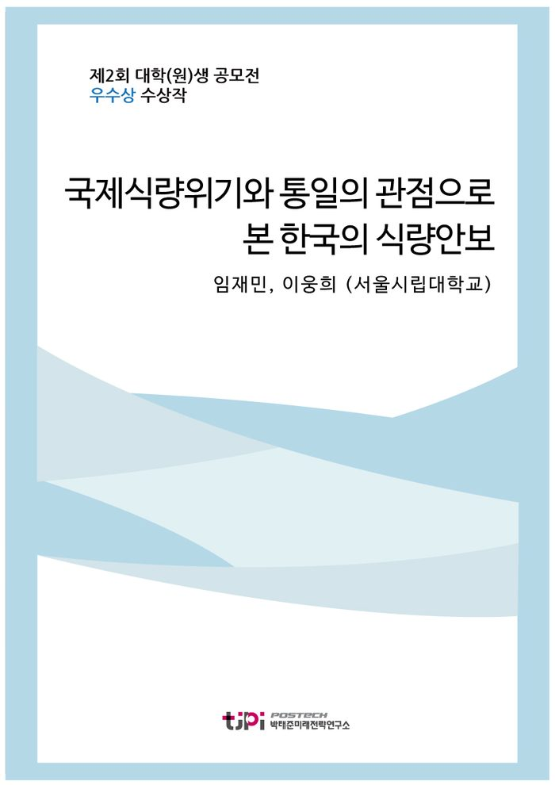
[2015 청년 에세이 우수작] 국제식량위기와 통일의 관점으로 본 한국의 식량안보 - 농업을 중심으로
임재민, 이웅희 (서울시립대학교) · 2015-09-01
2015 대학(원)생 에세이 공모전 우수작' 국제식량위기와 통일의 관점으로 본 한국의 식량안보 ' - 농업을 중심으로 - 서울시립대학교 임재민, 이웅..

[2015 청년 에세이 우수작] 국제식량위기와 통일의 관점으로 본 한국의 식량안보 - 농업을 중심으로
이규철 (포스텍) · 2015-09-01
2015 대학(원)생 에세이 공모전 우수작' 그 많던 청년들은 모두 어디로 갔을까? ' - 포스텍 이규철본 에세이는 청년 세대들의 한국 탈출 현상의 실태..

[2015 청년 에세이 우수작] 우리는 중학교에서 시민을 봅니다
방태영 (연세대학교) · 2015-09-01
2015 대학(원)생 에세이 공모전 우수작' 우리는 중학교에서 시민을 봅니다. 중학생의 시민성 함양을 위한 대학생 참여 프로그램 연구' - 연세대학�..
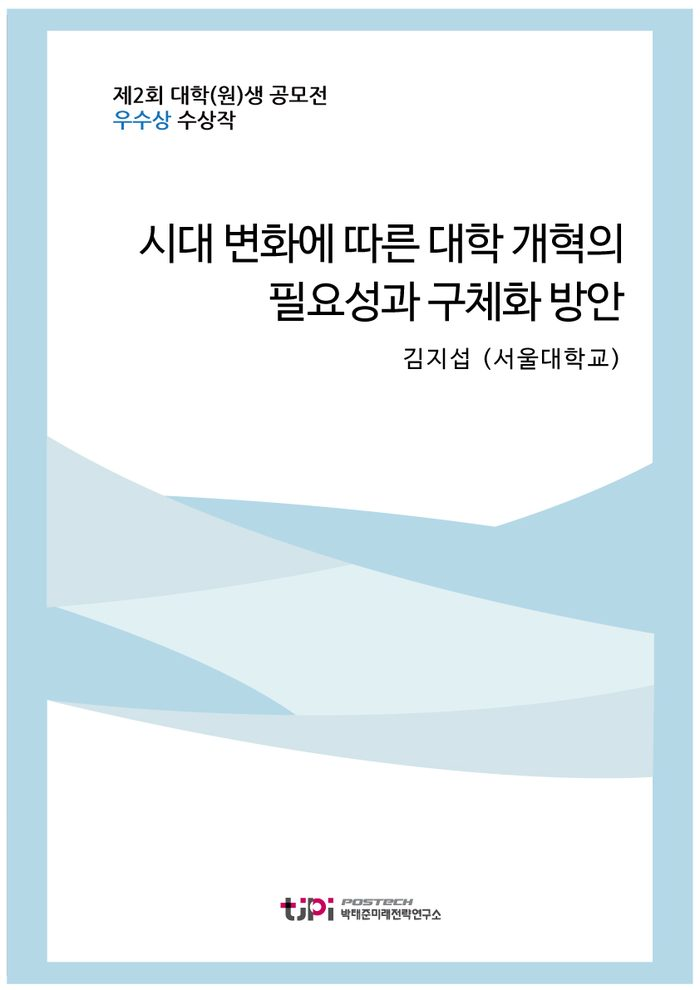
[2015 청년 에세이 우수작] 시대 변화에 따른 대학 개혁의 필요성과 구체화 방안
김지섭 (서울대학교) · 2015-09-01
2015 대학(원)생 에세이 공모전 우수작' 시대 변화에 따른 대학 개혁의 필요성과 구체화 방안 ' - 서울대학교 김지섭대학문제는 우리 사회의 여러 문제�..
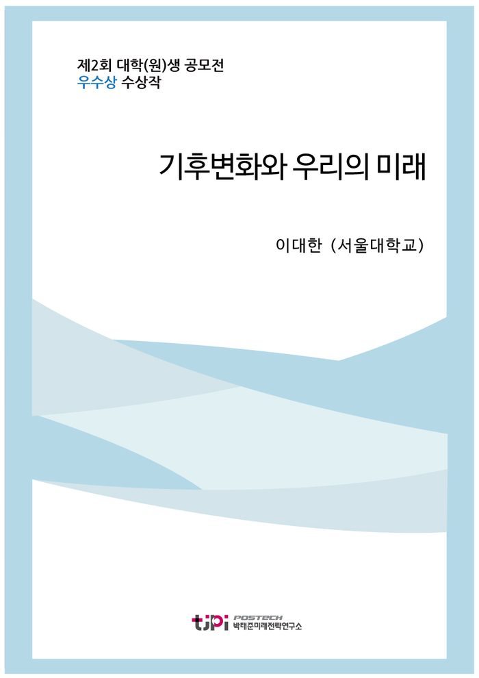
[2015 청년 에세이 우수작] 기후변화와 우리의 미래
이대한 (서울대학교) · 2015-09-01
2015 대학(원)생 에세이 공모전 우수작' 기후변화와 우리의 미래 ' - 서울대학교 이대한기후변화 문제는 10년 내에 한국사회가 당면할 가장 중요한 이슈..
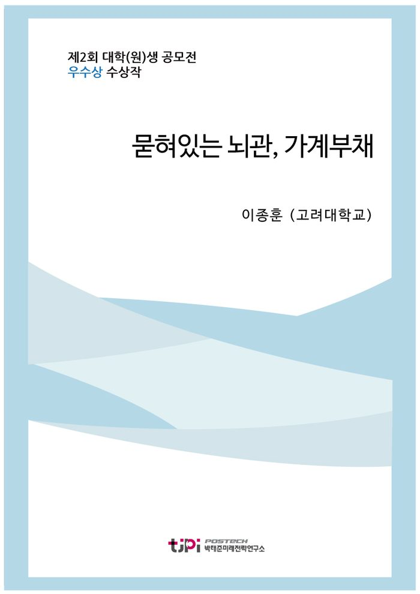
[2015 청년 에세이 우수작] 묻혀있는 뇌관, 가계부채
이종훈 (고려대학교) · 2015-09-01
2015 대학(원)생 에세이 공모전 우수작' 묻혀있는 뇌관, 가계부채 ' - 고려대학교 이종훈본 에세이는 ‘가계부채의 제도화’ 이후 발생한, 혹은 앞으로 ..
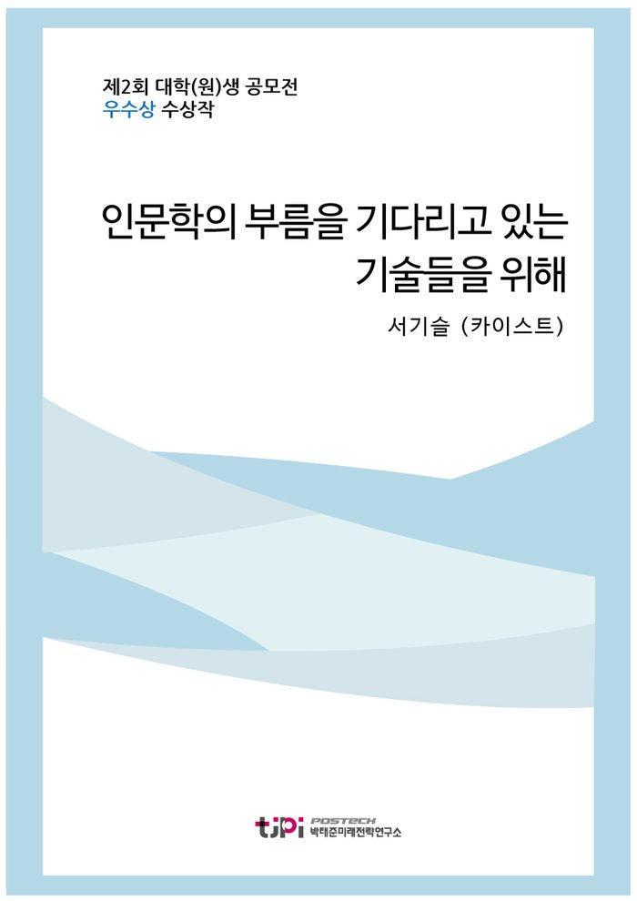
[2015 청년 에세이 우수작] 1인 가구 한국 사회, 고독사 급증에 대처하는 응급 안전 돌보미 서비스(Telecare Service)
서기슬 (카이스트) · 2015-09-01
2015 대학(원)생 에세이 공모전 우수작' 인문학의 부름을 기다리고 있는 기술들을 위해 ' - 하이테크 인문학 의 필요성과 육성 방안 - 카이스트 서기슬�..
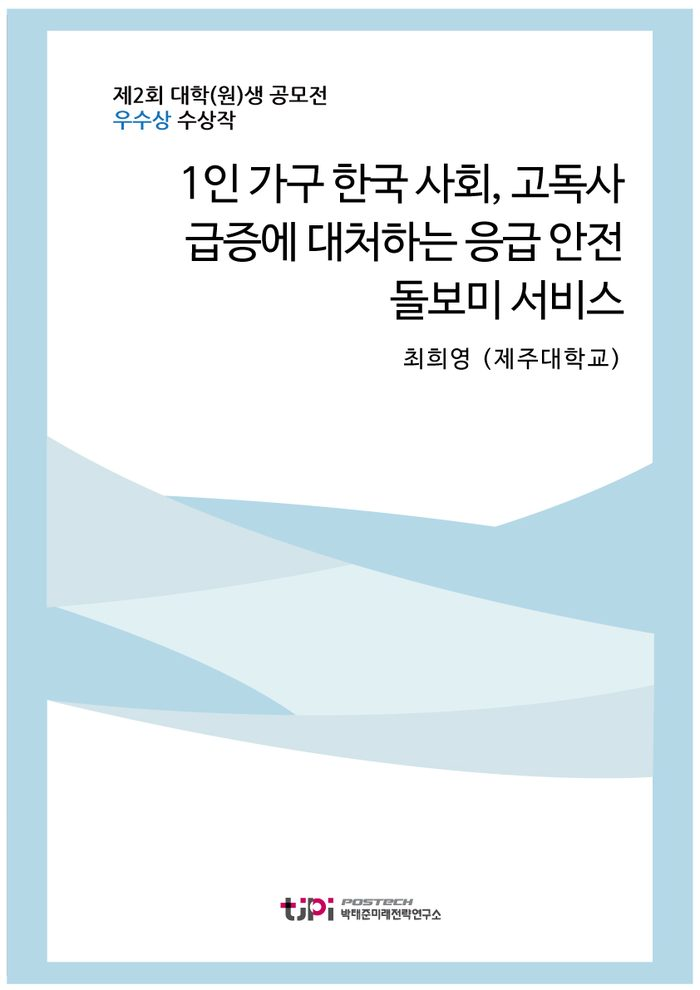
[2015 청년 에세이 우수작] 1인 가구 한국 사회, 고독사 급증에 대처하는 응급 안전 돌보미 서비스(Telecare Service)
최희영 (제주대학교) · 2015-09-01
2015 대학(원)생 에세이 공모전 우수작' 1인 가구 한국 사회, 고독사 급증에 대처하는 응급 안전 돌보미 서비스(Telecare Service) ' - 생명존중과, 개인의 독립..
※ The publications and records listed here are in Korean. Titles are shown as published.